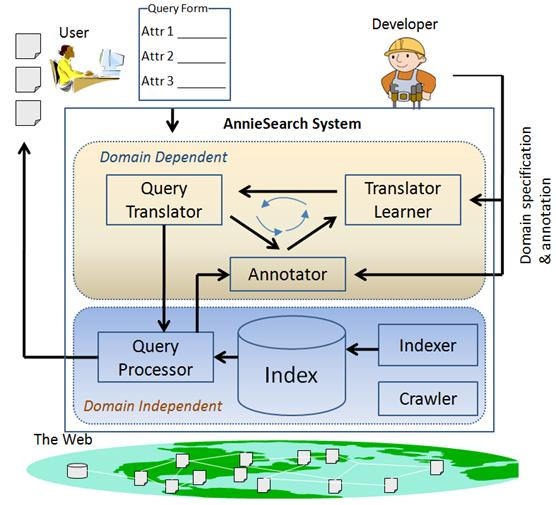
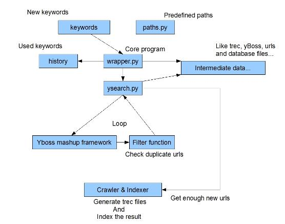

Developer Manual
Illinois Course Recommendation & Search EnginePreface
The iCourse software is a server implementable search engine that is designed to aid the user in order to be able easily locate course homepages based on a limited amount of information or keywords. The development and process to run such a piece of software has been simplified in order to able to allow the user to easily train the system into delivering accurate and germane results. The following is a description of the various aspects of collecting data and training the system.
The Formal Process
The formal process involves our system interfacing seamlessly internally with its several components and with the web as a whole. As such we have we separated into components
The above diagram depicts the entire system as a whole and previews how a constantly running system would interface with the web.
what the individual components should be and what component should be given direct access to the internet and what access the developer must have, the indexing and crawling stages as such will directly interface with the database and the internet, although in order to ensure consistency in our data mining techniques we have denied access to the developer in order to access this stage. The stage in which the developer steps in is the annotation and machine learning portions of our system that can be customized to meet the needs of developer in order to maintain different datasets. Example: perhaps a developer from UIUC would like to place a higher importance to pages from UIUC, whereas a developer focusing on instructor homepages rather than course homepages would place an emphasis on those kinds of web pages. In the end what matters most is the customer and as such the system front end interface has been simplified down to what any client would see on any other search homepage.
Indexing and Crawling:
The indexing and crawling stage uses an automated system that uses an interface called YahooBOSS in order to collect a set of links that direct to a course homepage, using this set of links we use our crawler to go to these individual web pages and gather the data contained on them. Once this is done we convert the information into our database format and hand it over to the annotation stage that requires human intervention at certain times.
The figure above is a detailed description of the method in which we achieve a database format that is readable by our annotation system.
A set of keywords are sent to an object wrapper that holds several programs that perform various tasks on the collection and conversion of data from the Yahoo search framework, this allows us to obtain a set of websites that might be relevant to our database. Once the process is done we move on to the final crawling and indexing stage that allows our crawlers to travel to these individual websites and collect information about them. It is as such that we have a set database that can be handed over to an annotation system that can organize and interpret this data.
Annotation:
The process of annotation is used to provide the system with a basic understanding of what it should be looking for as it indexes these pages, it involves using our developer interface to mark certain features of the webpage with their corresponding fields. A basic scenario would involve marking the instructor name, the course content, university and course number that appear on the corresponding homepage for a course website. There are other fields but these would be left blank as they might not appear, as such the developer needs to go through and annotate a certain number of valid pages in order to provide a base for the machine learning stage of the algorithm.
Machine Learning:
The machine learning stage is an automated process through which we use a set of algorithms to constantly improve the indexing of our data. As the annotator or user be it human or machine sends queries to our system, we use these queries to create datasets of maximum probable solutions in order to create an understanding of what seen as the optimal result, as such these optimal results are compared with the results generated by our algorithm allowing the algorithm to modify itself in order to achieve solutions of greater relevancy.
The following illustration is an example specific to what occurs in the iCourse system: